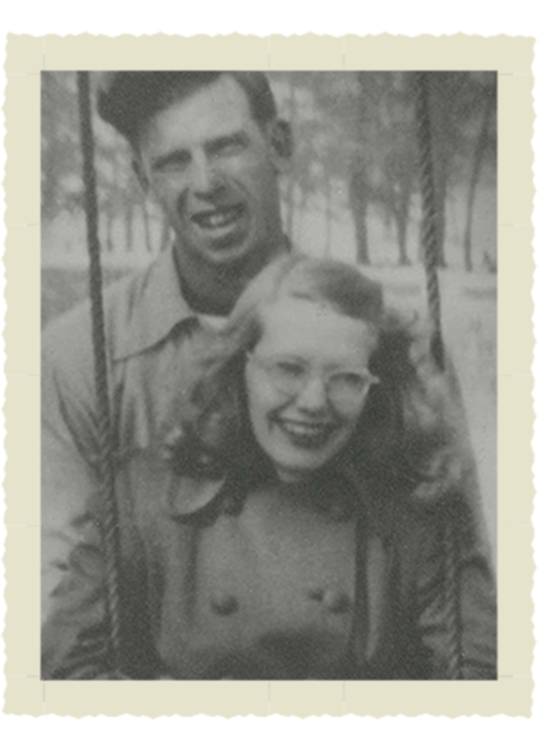

Dedicated to my grandma,
Judy Mickelson
Without you there would be no us.
(I should also dedicate this to my grandpa, I wish I knew you.)
This website is a small selection of photos that have a caption on the back. There are 20 photos, most of which are black and white, from the 1960s. My plan is to eventually scan all of the photos and make them available to the entire family.
Click on the photos button at the top of the screen to see the photo album.
